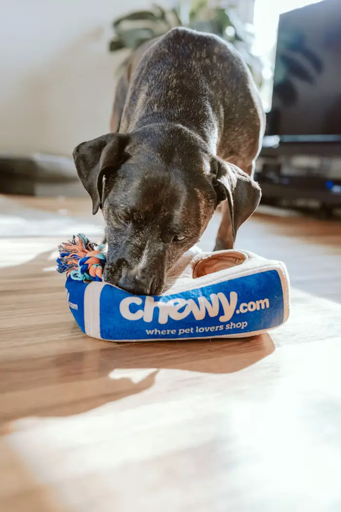
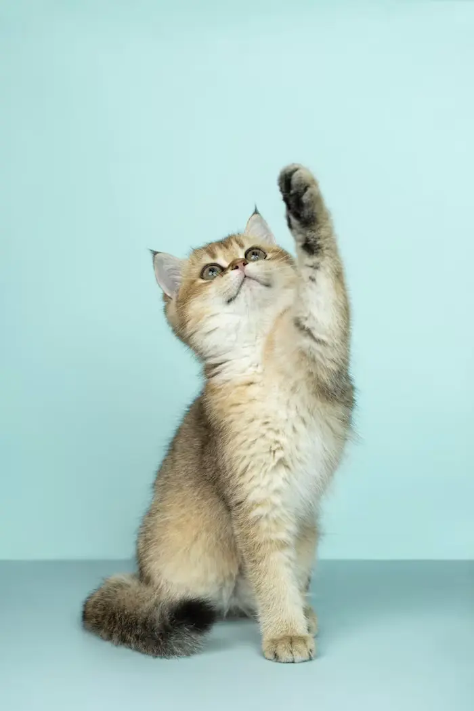
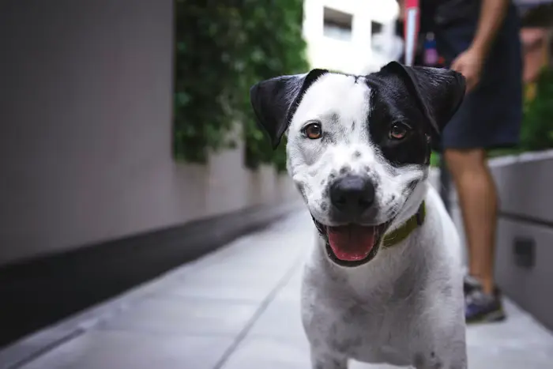
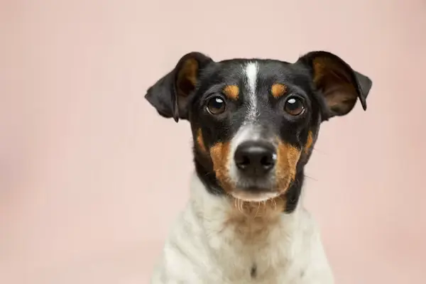
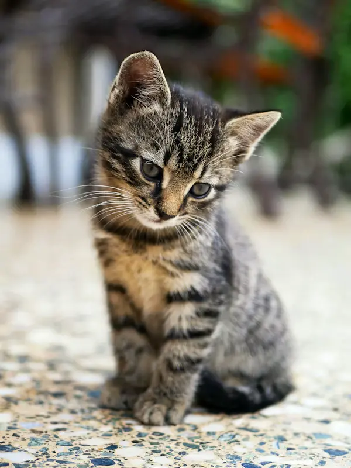
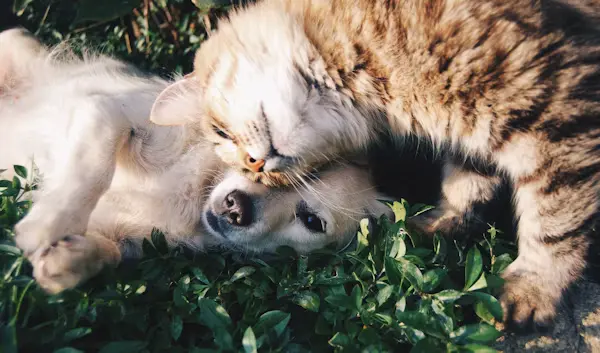
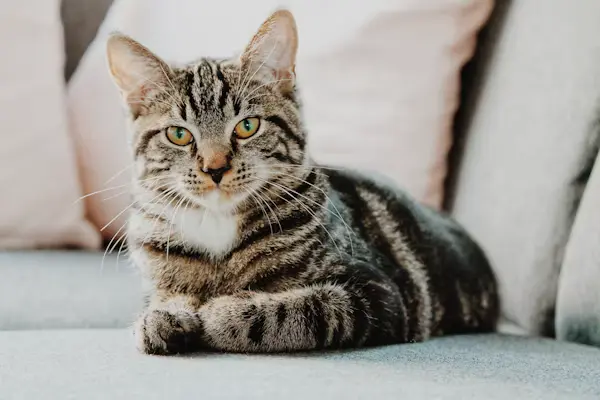
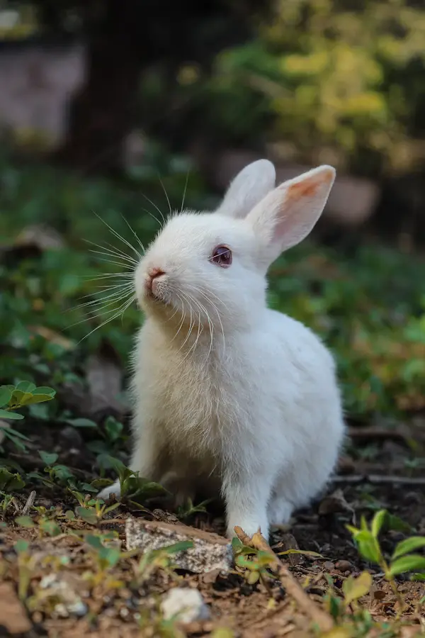

Surgery in 3 daysKalu’s broken leg
Hit by a two-wheeler near the bus stand. Needs a steel plate and six weeks of rest.
0%
₹27,400 raised of ₹38,000
Adopt · Foster · Sponsor
Every animal below has been rescued, vaccinated, sterilised and given a name. All that is missing is a sofa, a bowl and a person who says “come home.”
Meet the residents
Filter by species, age or name. Tap the heart to save a favourite, or open a profile to request a visit.
Try a different age or species, or clear the filters to see everyone.
Match finder
Tell us about your home, your pace and who you’re hoping to meet. We’ll compare it with every resident’s temperament and show the best fit.
Urgent · funding open
These three need surgery or long treatment first. Every rupee goes straight to the vet bill and you’ll get photo updates from recovery.

Surgery in 3 daysHit by a two-wheeler near the bus stand. Needs a steel plate and six weeks of rest.
₹27,400 raised of ₹38,000

Treatment ongoingA three-month-old kitten found in a drain. Needs eye surgery and daily medication.
₹4,300 raised of ₹12,000

Almost thereA gentle 10-year-old dropped at our gate. Heartworm treatment gives him years, not months.
₹19,800 raised of ₹24,000
The adoption passport
No long forms, no judgement. We just want to make sure the match lasts.
Save up to five favourites, or let the match finder narrow it down for you.
Visit the shelter, walk the dog or sit with the cat. Take as long as you need.
A 20-minute call about your space, routine and family — never a checklist to fail.
Sign the adoption pledge and pay the small contribution that funds the next rescue.
Leave with a starter kit, health card and a coordinator’s number for the first 30 days.
Included with every adoption
A small adoption contribution of ₹500–₹1,500 pays for everything below and helps rescue the next animal in line.
Core vaccines, rabies shot and deworming, recorded in a printed health card.
Spay or neuter surgery is done before adoption, so there are no surprise vet bills.
A full vet exam plus tick, flea and skin treatment. Anything ongoing is explained clearly.
A week of the food they already eat, a collar or harness, a leash and a soft blanket.
Call or message our behaviour coordinator any day. Settling in takes patience.
If it truly doesn’t work, they come back to us — never to the street.
Happy tails
Postcards from families who said yes. Drag the strip or use the arrows.

Adopted by the Subramanian family, Salem
“She slept under the bed for a week. Now she owns the sofa and greets every guest like a long-lost cousin.”

Adopted by Divya, Coimbatore
“Found in a monsoon drain, weighed 300 grams. Today he weighs four kilos and supervises all my video calls.”

Adopted by Imran & family, Erode
“The kids were nervous for exactly ten minutes. Now he has his own school-bag-shaped pillow.”

Adopted by Mr. Raghavan, Chennai
“At 78 I wanted quiet company. Nila is calm, opinionated and never late for breakfast.”

Adopted by Sneha, Bengaluru
“I didn’t know rabbits binky. Now I know, and my flat has never been happier.”
Before you adopt
Still curious? Call +91 90000 12345 or drop into the shelter between 9 AM and 6 PM.
Foster insteadVaccines, sterilisation, microchip, health card and a starter kit. Contributions range from ₹500 to ₹1,500 depending on the animal’s medical history.
Yes. We’ll ask for your landlord’s consent and match you with pets who suit smaller spaces — many of our calm adults and cats thrive in apartments.
Most families go from first visit to home-coming in three to five days. Puppies and kittens may need an extra vet check before they can leave.
Call us within the 30-day support window and we’ll troubleshoot with you. If it still isn’t right, the animal returns to Stackly and we find another home.
Absolutely. Sponsors cover food and care for a named animal and receive monthly photo updates. You can start from the urgent cases above or on the donate page.
A monthly gift of ₹500 keeps one shelter animal fed, vaccinated and loved until the right family walks in.